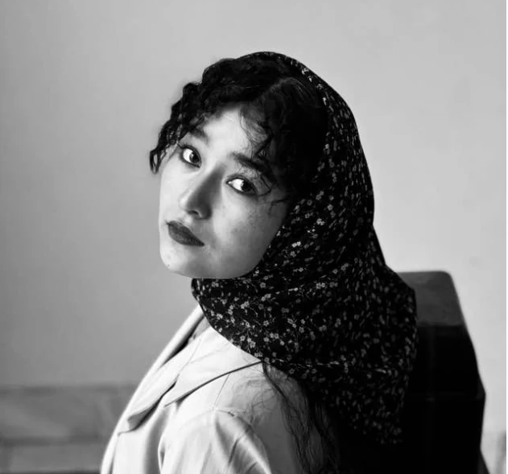

Meet the founder.
Girls for Knowledge is shaped by a commitment to education, community, and practical opportunities for girls to keep learning.

Zalfa Mohammadi
Zalfa Mohammadi is the founder of Girls for Knowledge, an education-focused initiative dedicated to expanding learning opportunities for girls and young women. Through the organization, she works to bring learners, educators, volunteers, and community supporters together around access to knowledge, confidence, and long-term opportunity.
Her approach centers on creating practical, welcoming spaces where girls can continue learning, develop useful skills, and remain connected to a community that values their potential.
Work with usA community grows when people contribute together.
Interested in volunteering, partnering, or supporting our work? We would be glad to hear from you.